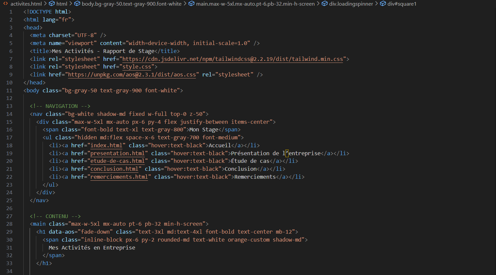

Mes Activités en Entreprise
Réalisation de pages web
J'ai ete formé en html et css pour commancer a dévélopper des sites web, j'ai suivie des formations et aprofondie mes connaisances sur sertaines facettes de ce balisage. Cela m'a permis de consolider mes compétences en responsive design et en architecture de code front-end ce qui m'aidera dans mon objectif de devenir DevOps.
Analyse de sécurité
Sous la supervision d'un expert, j'ai participé à des audits de sécurité et à des tests d'intrusion sur des applications internes. J'ai pu voir comment utiliser des outils comme Burp Suite et OWASP ZAP, j'ai beaucoup aimee cette partie de mon stage. J'en raccontrai plus dans mon étude de cas.
Participation à des réunions Daily
J'ai assisté à des réunions quotidiennes (daily meetings), Un résumé du travail a faire chaque jour. Cela m'a aidé à comprendre l'organisation d'une équipe de développement et de voir les objectifs que chaque equipe avait. J'ai pu observé aussi les tache que devait reguliairement faires les DevOps, ce qui commence a me former sur le sujet.